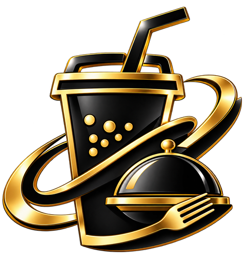

FnB FusionChoose Your Language / Pilih Bahasa
All translations of the FnB Fusion website live in this file, so the main page stays light. Indonesian is fully translated here; the other languages are translated automatically when you open the main page online.
Semua terjemahan situs FnB Fusion disimpan di file ini agar halaman utama tetap ringan. Bahasa Indonesia diterjemahkan penuh di sini; bahasa lain diterjemahkan otomatis saat halaman utama dibuka secara online.
🇬🇧English
English
🇮🇩Indonesian
Bahasa Indonesia
🇯🇵Japanese
日本語
🇰🇷Korean
한국어
🇨🇳Chinese (Simp)
简体中文
🇹🇼Chinese (Trad)
繁體中文
🇸🇦Arabic
العربية
🇪🇸Spanish
Español
🇫🇷French
Français
🇩🇪German
Deutsch
🇮🇹Italian
Italiano
🇧🇷Portuguese
Português
🇷🇺Russian
Русский
🇳🇱Dutch
Nederlands
🇹🇷Turkish
Türkçe
🇹🇭Thai
ภาษาไทย
🇻🇳Vietnamese
Tiếng Việt
© 2026 PT SUKA SUKA MAKAN MINUM